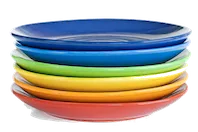

Giriş
Yığının son giren ilk çıkar davranışını açıklamak.
Yığını dizi ve bağlı liste kullanarak gerçekleştirmek.
Yığınları ifade çözümleme ve çağrı yönetiminde kullanmak.
Temel yığın işlemlerinin zaman ve alan maliyetlerini değerlendirmek.
Yığın ADT

Yeni tabak en üste konur, alınan tabak da en üstten alınır.
Yığın ADT
| İşlem | Açıklama |
|---|---|
push(x) | Üste yeni öğe x ekler. |
pop() | Üstteki öğeyi çıkarır ve döndürür. |
top() | Üstteki öğeyi çıkarmadan döndürür (Java: peek()). |
isEmpty() | Yığın boş mu? |
size() | Öğe sayısını döndürür. |
Yığın ADT
Başlangıçta yığın boş: size = 0, üstte öğe yok.
push(10): 10 boş yığına eklenir; üst (top) artık 10.
push(15): 15, 10'un üstüne konur.
push(20): 20 en üste konur; size = 3.
top(): üstteki 20 okunur ama çıkarılmaz.
pop(): son giren 20 ilk çıkar (LIFO).
pop(): 15 çıkar; üst artık 10.
pop(): 10 çıkar; yığın yeniden boş.
Boş yığında pop() → alt taşma (underflow) hatası.
Yığın ADT
Yığın bir dizide tutulur; top üstteki öğenin indisidir ve boş yığında top = −1.
başla eğer yığın doluysa // top = kap−1 hata ver: üst taşma (overflow) değilse top değerini 1 artır yığın[top] ← x son
başla eğer yığın boşsa // top = −1 hata ver: alt taşma (underflow) değilse x ← yığın[top]; top 1 azalt x değerini döndür son
başla eğer yığın boşsa hata ver değilse yığın[top] döndür son
isEmpty: top = −1 ise true, değilse false size: top + 1 döndür
Yığın ADT
| İşlem | Zaman | Neden? |
|---|---|---|
push | O(1) | yalnızca üst değişir |
pop | O(1) | yalnızca üst değişir |
top | O(1) | üst doğrudan bilinir |
isEmpty, size | O(1) | sayaç / indis tutulur |
| bir öğeyi arama | O(n) | öğeler tek tek çıkarılmalı |
Gerçekleme
Boş yığından çıkarma (alt taşma) her iki türde de hatadır; üst taşma yalnızca sabit boyutlu yığında görülür.
Gerçekleme
Yığın ADT'si bir dizi (array) ya da bağlı liste (linked list) ile gerçekleştirilebilir.
push: top indisi artırılır, öğe dizi[top]'a yazılır.pop: dizi[top] alınır, sonra top azaltılır.push: yeni düğüm listenin başına eklenir.pop: baştaki düğüm çıkarılır, değeri döndürülür.Gerçekleme
Bu yaklaşıma sınırlı yığın (bounded stack) da denir: kapasite oluşturulurken belirlenir ve değişmez.
null atanmalıdır; yoksa nesne bellekte gereksiz yere kalır.Gerçekleme
public class DiziYigin<E> { private E[] veri; private int top = -1; // -1 → boş yığın public DiziYigin(int kapasite) { veri = (E[]) new Object[kapasite]; } public boolean isEmpty() { return top == -1; } public int size() { return top + 1; } public E top() { return isEmpty() ? null : veri[top]; } public void push(E x) { if (top == veri.length - 1) throw new IllegalStateException("Taşma"); veri[++top] = x; } public E pop() { if (isEmpty()) throw new IllegalStateException("Alt taşma"); E x = veri[top]; veri[top--] = null; // referansı bırak return x; } }
Genel (generic) dizi doğrudan oluşturulamadığı için Object[] dönüştürülür (derleyici “unchecked” uyarısı verir). Tüm işlemler O(1).
Gerçekleme
class Dugum { int veri; Dugum sonraki; Dugum(int veri) { this.veri = veri; } // sonraki = null }
Neden başa ekliyoruz? Tek yönlü listede sondan silmek için sondan bir önceki düğümü bulmak gerekir → O(n).
Gerçekleme
// Örnek değişkenleri Dugum top; // yığının üstü int uzunluk; public void push(int veri) { Dugum gecici = new Dugum(veri); gecici.sonraki = top; top = gecici; uzunluk++; }
Başlangıç: top = null, uzunluk = 0 (boş yığın).
// Örnek değişkenleri Dugum top; // yığının üstü int uzunluk; public void push(int veri) { Dugum gecici = new Dugum(veri); gecici.sonraki = top; top = gecici; uzunluk++; }
Yeni düğüm oluşturulur; gecici ona işaret eder (sonraki = null).
// Örnek değişkenleri Dugum top; // yığının üstü int uzunluk; public void push(int veri) { Dugum gecici = new Dugum(veri); gecici.sonraki = top; top = gecici; uzunluk++; }
gecici.sonraki = top: top null olduğundan sonraki yine null.
// Örnek değişkenleri Dugum top; // yığının üstü int uzunluk; public void push(int veri) { Dugum gecici = new Dugum(veri); gecici.sonraki = top; top = gecici; uzunluk++; }
top = gecici: top artık yeni düğümü gösterir.
// Örnek değişkenleri Dugum top; // yığının üstü int uzunluk; public void push(int veri) { Dugum gecici = new Dugum(veri); gecici.sonraki = top; top = gecici; uzunluk++; }
uzunluk++ → 1. Metot biter, gecici yerel değişkeni kaybolur.
// Örnek değişkenleri Dugum top; // yığının üstü int uzunluk; public void push(int veri) { Dugum gecici = new Dugum(veri); gecici.sonraki = top; top = gecici; uzunluk++; }
push(15): yeni düğüm 15 oluşturulur, gecici onu gösterir.
// Örnek değişkenleri Dugum top; // yığının üstü int uzunluk; public void push(int veri) { Dugum gecici = new Dugum(veri); gecici.sonraki = top; top = gecici; uzunluk++; }
gecici.sonraki = top: 15, eski üst olan 10'a bağlanır.
// Örnek değişkenleri Dugum top; // yığının üstü int uzunluk; public void push(int veri) { Dugum gecici = new Dugum(veri); gecici.sonraki = top; top = gecici; uzunluk++; }
top = gecici: yeni üst 15. Listenin başına ekleme → O(1).
// Örnek değişkenleri Dugum top; // yığının üstü int uzunluk; public void push(int veri) { Dugum gecici = new Dugum(veri); gecici.sonraki = top; top = gecici; uzunluk++; }
uzunluk++ → 2. Yığın (üstten alta): 15, 10.
Gerçekleme
public int pop() { if (top == null) throw new RuntimeException("boş"); int sonuc = top.veri; top = top.sonraki; uzunluk--; return sonuc; }
pop(): önce boşluk kontrolü; top null değil, devam edilir.
public int pop() { if (top == null) throw new RuntimeException("boş"); int sonuc = top.veri; top = top.sonraki; uzunluk--; return sonuc; }
sonuc = top.veri → 15 saklanır.
public int pop() { if (top == null) throw new RuntimeException("boş"); int sonuc = top.veri; top = top.sonraki; uzunluk--; return sonuc; }
top = top.sonraki: top bir sonraki düğüme (10) geçer.
public int pop() { if (top == null) throw new RuntimeException("boş"); int sonuc = top.veri; top = top.sonraki; uzunluk--; return sonuc; }
uzunluk-- → 1.
public int pop() { if (top == null) throw new RuntimeException("boş"); int sonuc = top.veri; top = top.sonraki; uzunluk--; return sonuc; }
15 döndürülür. Referansı kalmayan düğümü çöp toplayıcı temizler.
public int pop() { if (top == null) throw new RuntimeException("boş"); int sonuc = top.veri; top = top.sonraki; uzunluk--; return sonuc; }
İkinci pop(): sonuc = top.veri → 10.
public int pop() { if (top == null) throw new RuntimeException("boş"); int sonuc = top.veri; top = top.sonraki; uzunluk--; return sonuc; }
top = top.sonraki → top = null.
public int pop() { if (top == null) throw new RuntimeException("boş"); int sonuc = top.veri; top = top.sonraki; uzunluk--; return sonuc; }
uzunluk-- → 0 ve 10 döndürülür. Yığın boş.
public int pop() { if (top == null) throw new RuntimeException("boş"); int sonuc = top.veri; top = top.sonraki; uzunluk--; return sonuc; }
Boş yığında pop(): top == null → istisna (alt taşma), NullPointerException değil.
Gerçekleme
| Ölçüt | Dizi tabanlı | Bağlı liste tabanlı |
|---|---|---|
| Boyut | sabit kapasite (dinamik dizide büyütülür) | esnek, çalışma zamanında değişir |
| push / pop | O(1) (büyütmede amortize O(1)) | O(1) |
| Taşma | üst taşma mümkün | yalnızca bellek biterse |
| Öğe başına bellek | yalnızca veri | veri + sonraki referansı |
| Boş yer | kullanılmayan kapasite | yok |
| Java | ArrayDeque, Stack (Vector tabanlı) | LinkedList (Deque olarak) |
Deque<Integer> y = new ArrayDeque<>(); ile push/pop/peek önerilir; eski Stack sınıfı senkronize olduğu için daha yavaştır.Yığın Uygulamaları
Yığın Uygulamaları
Başlangıç: str = "ABCD", karakter dizisi oluşturulur, yığın boş.
1. döngü: yigit.push('A')
1. döngü: yigit.push('B')
1. döngü: yigit.push('C')
1. döngü: yigit.push('D')
2. döngü, i = 0: karakterler[0] = yigit.pop() → 'D'
2. döngü, i = 1: karakterler[1] = yigit.pop() → 'C'
2. döngü, i = 2: karakterler[2] = yigit.pop() → 'B'
i = 3: son karakter 'A' yerleşir → sonuç "DCBA".
String tersCevir(String str) {
Stack<Character> yigit = new Stack<>();
char[] karakterler = str.toCharArray();
for (char c : karakterler)
yigit.push(c);
for (int i = 0; i < str.length(); i++)
karakterler[i] = yigit.pop();
return new String(karakterler);
}
Yığın Uygulamaları
S dizisi yalnızca ( ) { } [ ] karakterlerinden oluşsun. S geçerlidir ancak ve ancak:
Yığın Uygulamaları
{{[]}()}[]{push{{push{ {[push{ { []pop [{ {}pop {{(push{ ()pop ({}pop {(boş)[push[]pop [(boş)([)]( push, [ push, ) gelince pop → [ çıkar: tip uyuşmaz → false.(()Dize bitti ama yığında ( kaldı → false.())Son ) geldiğinde yığın boş → false.Yığın Uygulamaları
boolean gecerliMi(String s) { Deque<Character> yigin = new ArrayDeque<>(); for (char c : s.toCharArray()) { if (c == '(' || c == '[' || c == '{') { yigin.push(c); } else { if (yigin.isEmpty()) return false; char acik = yigin.pop(); if ((c == ')' && acik != '(') || (c == ']' && acik != '[') || (c == '}' && acik != '{')) return false; } } return yigin.isEmpty(); }
"())" ya da "]" girdisinde stack.pop() boş yığında çağrılır ve EmptyStackException fırlatılır.Yığın Uygulamaları
Dizideki her eleman için sağında kalan, kendisinden büyük ilk elemanı bul; yoksa −1.
| dizi | 4 | 7 | 3 | 4 | 8 | 1 |
|---|---|---|---|---|---|---|
| sonuc | 7 | 8 | 4 | 8 | −1 | −1 |
int[] sonrakiBuyuk(int[] dizi) { int[] sonuc = new int[dizi.length]; Stack<Integer> yigit = new Stack<>(); for (int i = dizi.length-1; i >= 0; i--) { while (!yigit.isEmpty() && yigit.peek() <= dizi[i]) yigit.pop(); sonuc[i] = yigit.isEmpty() ? -1 : yigit.peek(); yigit.push(dizi[i]); } return sonuc; }
Yığın Uygulamaları
Dizi sağdan sola taranır; yığında sağdaki olası “sonraki büyük” adaylar tutulur.
i = 5: dizi[5] = 1 için cevap yığının üstünde.
i = 4: yığındaki küçük/eşit değerler atılır; kalan üst değer cevaptır.
i = 3: dizi[3] = 4 için cevap yığının üstünde.
i = 2: dizi[2] = 3 için cevap yığının üstünde.
i = 1: yığındaki küçük/eşit değerler atılır; kalan üst değer cevaptır.
Sonuç: {7, 8, 4, 8, −1, −1}. Her eleman en fazla bir kez eklenip çıkarılır → O(n).
Hanoi Kuleleri
Bilgisayar bilimi ve matematikte klasik bir problem: bir disk yığını, kurallara uyularak kaynak çubuktan hedef çubuğa taşınır.
Hanoi Kuleleri
Başlangıç: 3 disk A çubuğunda (büyük altta). Hedef: hepsini C'ye taşımak.
Hamle 1: disk 1, A → C.
Hamle 2: disk 2, A → B.
Hamle 3: disk 1, C → B.
Hamle 4: disk 3, A → C.
Hamle 5: disk 1, B → A.
Hamle 6: disk 2, B → C.
Hamle 7: disk 1, A → C. Bitti: 2³ − 1 = 7 hamle.
Hanoi Kuleleri
record Gorev(int n, char kaynak, char yard, char hedef) {} void hanoi(int diskSayisi) { Stack<Gorev> yigin = new Stack<>(); yigin.push(new Gorev(diskSayisi, 'A', 'B', 'C')); // başlangıç görevi while (!yigin.isEmpty()) { Gorev g = yigin.pop(); if (g.n() == 1) { System.out.println("Diski " + g.kaynak() + " → " + g.hedef() + " taşı"); } else { // LIFO: son eklenen ilk çalışır yigin.push(new Gorev(g.n() - 1, g.yard(), g.kaynak(), g.hedef())); // 3. yigin.push(new Gorev(1, g.kaynak(), g.yard(), g.hedef())); // 2. yigin.push(new Gorev(g.n() - 1, g.kaynak(), g.hedef(), g.yard())); // 1. } } }
Hanoi Kuleleri
Başlangıç görevi: 3 diski A'dan C'ye, B yardımcı ile taşı.
n = 3: üç alt göreve bölünür; ilk yapılacak iş en son eklenir (LIFO).
n = 2: üç alt göreve bölünür; ilk yapılacak iş en son eklenir (LIFO).
n = 1: doğrudan taşınır (disk 1).
n = 1: doğrudan taşınır (disk 2).
n = 1: doğrudan taşınır (disk 1).
n = 1: doğrudan taşınır (disk 3).
n = 2: üç alt göreve bölünür; ilk yapılacak iş en son eklenir (LIFO).
n = 1: doğrudan taşınır (disk 1).
n = 1: doğrudan taşınır (disk 2).
Yığın boş: 7 hamle tamamlandı, tüm diskler C'de.
Stock Span
| Gün | Fiyat | Span | Neden? |
|---|---|---|---|
| 1 | 100 | 1 | ilk gün |
| 4 | 70 | 2 | 60 ≤ 70, 80 > 70 |
| 6 | 75 | 4 | 60, 70, 60 ≤ 75; 80 > 75 |
| 7 | 85 | 6 | 75, 60, 70, 60, 80 ≤ 85 |
Fiyatlar [100, 80, 60, 70, 60, 75, 85] → span [1, 1, 1, 2, 1, 4, 6]. Çubukların altındaki kalın sayılar span değerleridir.
Stock Span
int[] span(int[] fiyatlar) { int[] sicrama = new int[fiyatlar.length]; Stack<Integer> yigin = new Stack<>(); yigin.push(0); sicrama[0] = 1; for (int i = 1; i < fiyatlar.length; i++) { while (!yigin.isEmpty() && fiyatlar[i] >= fiyatlar[yigin.peek()]) yigin.pop(); sicrama[i] = yigin.isEmpty() ? i + 1 : i - yigin.peek(); yigin.push(i); } return sicrama; }
Stock Span
İlk gün: yığın boş → span[0] = 1; indis 0 yığına eklenir.
fiyat[1] = 80, üstteki 100'den düşük → span = 1.
fiyat[2] = 60, üstteki 80'den düşük → span = 1.
Bugünkü fiyattan küçük/eşit günler atılır; üstteki indis ilk daha yüksek gün.
fiyat[4] = 60, üstteki 70'den düşük → span = 1.
Bugünkü fiyattan küçük/eşit günler atılır; üstteki indis ilk daha yüksek gün.
85 ≥ 75 ve 80 → çıkarılır; üstte 100 kalır: span[6] = 6 − 0 = 6.
İfade Gösterimleri
| Gösterim | Operatörün yeri | A * (B + C) / D |
|---|---|---|
| İçtakı (infix) | işlenenlerin arasında | A * ( B + C ) / D |
| Öntakı (prefix) · Polonya gösterimi | işlenenlerden önce | / * A + B C D |
| Arttakı (postfix) · ters Polonya (RPN) | işlenenlerden sonra | A B C + * D / |
* A / + B C D, A * ((B + C) / D) demektir. Soldan sağa işlem sırasına uygun doğru prefix: / * A + B C D.İfade Gösterimleri
| Operatör | Öncelik | Birleşme |
|---|---|---|
^ (üs) | 3 | sağdan sola |
* / | 2 | soldan sağa |
+ − | 1 | soldan sağa |
Aynı öncelikte soldan sağa: A − B + C = (A − B) + C → postfix A B − C +.
((A * (B + C)) / D)A B C + * D // * A + B C Dİfade Gösterimleri
Girdi soldan sağa okunur; operatörler ve açık parantezler bir yığında bekletilir.
| Okunan simge | Yapılacak işlem |
|---|---|
| İşlenen (A, B, 5 …) | Doğrudan çıktıya yaz. |
( | Yığına koy. |
) | ( görülene kadar yığından çıkarıp çıktıya yaz; ('ı at. |
| Operatör op | Üstte ( olmadığı ve üstteki operatörün önceliği ≥ op olduğu sürece çıkarıp çıktıya yaz; sonra op'u yığına koy. |
| Girdi bitti | Yığında kalan tüm operatörleri çıkarıp çıktıya yaz. |
“≥” kuralı soldan sağa birleşmeyi sağlar. Sağdan birleşen ^ için yalnızca önceliği > olanlar çıkarılır. Zaman O(n).
İfade Gösterimleri
Girdi soldan sağa okunur. İşlenenler çıktıya, operatörler ve '(' yığına gider.
A işlenen → doğrudan çıktıya.
*: yığın boş → yığına konur.
( → her zaman yığına konur.
B işlenen → doğrudan çıktıya.
+: üstte '(' var → doğrudan yığına.
C işlenen → doğrudan çıktıya.
) → '(' görülene kadar çıkar: + çıktıya; '(' atılır.
/: üstteki * önceliği ≥ → çıktıya; sonra / yığına.
D işlenen → doğrudan çıktıya.
Girdi bitti: yığında kalanlar çıktıya → A B C + * D /
İfade Gösterimleri
| Simge | İşlem | Yığın | Çıktı |
|---|---|---|---|
A | çıktıya | | A |
+ | push + | + | A |
B | çıktıya | + | A B |
* | push * | + * | A B |
C | çıktıya | + * | A B C |
− | pop * +, push − | − | A B C * + |
D | çıktıya | − | A B C * + D |
/ | push / | − / | A B C * + D |
E | çıktıya | − / | A B C * + D E |
son | pop / − | | A B C * + D E / − |
* geldiğinde üstte + var; * daha öncelikli olduğu için + yığında bekler.− geldiğinde önce *, sonra eşit öncelikli + çıkarılır.A B C * + D E / −İfade Gösterimleri
String infixToPostfix(String ifade) { // oncelik: + − → 1, * / → 2, ( → 0
StringBuilder cikti = new StringBuilder();
Stack<Character> yigin = new Stack<>();
for (char c : ifade.toCharArray()) {
if (Character.isLetterOrDigit(c)) cikti.append(c);
else if (c == '(') yigin.push(c);
else if (c == ')') {
while (yigin.peek() != '(') cikti.append(yigin.pop());
yigin.pop(); // '(' atılır
} else { // operatör
while (!yigin.isEmpty() && oncelik(yigin.peek()) >= oncelik(c))
cikti.append(yigin.pop());
yigin.push(c);
}
}
while (!yigin.isEmpty()) cikti.append(yigin.pop());
return cikti.toString();
}
Varsayım: tek karakterli işlenenler, boşluksuz ve geçerli ifade. oncelik('(') = 0 olduğundan operatörler ('ı hiç çıkarmaz.
İfade Gösterimleri
A=4, B=1, C=2, D=3 için A B C + * D / → 4 1 2 + * 3 /
4 sayı → yığına.
1 sayı → yığına.
2 sayı → yığına.
+: pop 2 (sağ), pop 1 (sol); 1 + 2 = 3 yığına.
*: pop 3 (sağ), pop 4 (sol); 4 * 3 = 12 yığına.
3 sayı → yığına.
/: pop 3 (sağ), pop 12 (sol); 12 / 3 = 4 yığına. Sonuç: 4.
İfade Gösterimleri
( ↔ ).| Adım | A * (B + C) / D |
|---|---|
| 1–2. Ters çevir, parantezleri değiştir | D / ( C + B ) * A |
| 3. Postfix (eşitte çıkarmadan) | D C B + A * / |
| 4. Ters çevir → prefix | / * A + B C D |
* geldiğinde üstte eşit öncelikli / vardır; / çıkarılmaz. Böylece ters çevirince soldan birleşme korunur: önce A * (B + C), sonra / D.A + B * C − D / E → − + A * B C / D EÖzet
| Problem | Yığında tutulan | Zaman |
|---|---|---|
| push / pop / top / isEmpty / size | — | O(1) |
| Dize ters çevirme | karakterler | O(n) |
| Parantez kontrolü | eşleşmemiş açık parantezler | O(n) |
| Sonraki büyük eleman | sağdaki aday değerler (azalan) | O(n) |
| Stock span | henüz aşılmamış günlerin indisleri | O(n) |
| Hanoi kuleleri | alt görevler (n, kaynak, yard., hedef) | O(2n) |
| Infix → postfix / prefix | operatörler ve ( | O(n) |
| Postfix değerlendirme | ara sonuçlar | O(n) |
Ortak desen: “en son görülen, henüz sonuçlanmamış öğe” ile ilgileniyorsak yığın kullanırız (LIFO).
Özet
Bu bölümün algoritmalarını kendi girdilerinizle adım adım deneyin:
Özet
{[()()]} ve {[(])} dizilerinden hangisi geçerlidir? Geçersiz olanda hata hangi karakterde fark edilir?(A + B) * (C − D) / E ifadesini postfix ve prefix biçimine çevirin.5 1 2 + 4 * + 3 − postfix ifadesinin değeri nedir?{[()()]} geçerli. {[(])}: ] geldiğinde üstte ( var → geçersiz.A B + C D − * E / · Prefix: / * + A B − C D EÖzet
Deque ve ArrayDeque API belgeleri.← → veya boşluk ile gezinin · F: tam ekran · Home/End: ilk/son slayt